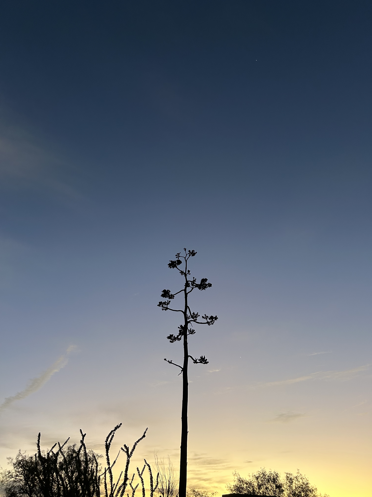

About
Reporting on the people and forces shaping Texas.
I’m a freelance writer with more than a decade of experience covering the complex dynamics of race, ethnicity, wealth, poverty and power and how they impact the lives and futures of Texans.
More about me →
Texan
writing about
Texas.
I’m a freelance writer based in Austin, Texas, spending most of time with Texas history these days. My work
has appeared in publications, such as Texas Monthly Magazine,
The New York Times, The Washington Post, Texas Highways, The Guardian,
NPR, Preservation Magazine, and more. I worked previously for The Texas Tribune from 2013 to 2023.
My work has directly influenced state policymaking, and it has been repeatedly recognized, including with a national Edward R. Murrow Award.